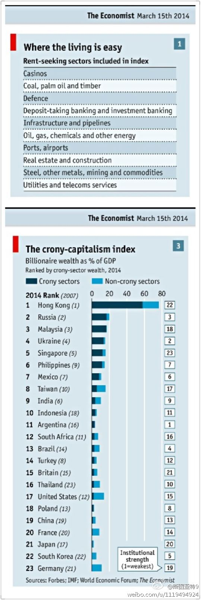

看了些关于饮食与健康的书，笔记：1. 肥胖是健康最重要的指示标，最大的原因是摄入热量过多锻炼过少；2. 脂肪淀粉蛋白质转为皮下脂肪的效率是差不多的；3. 不饱和脂肪是坏的；4. 单一碳水化合物是垃圾食品，如白米饭；5. 摄入盐过多容易高血压；5. 体育锻炼有饮食调节不能替代的作用，如防止骨质疏松。

斯图亚特9
2014-03-19
斯图亚特9
2014-03-19
上次数的「经济学人」杂志写权贵资本主义的封面文章的两张插图：什么领域是容易钱权交易的领域；世界各地的权贵资本主义指数。猜猜谁是第一？
- 

斯图亚特9
2014-03-19
Caltrain系统故障全线瘫痪…… 我在: 美国Millbrae
美国Millbrae